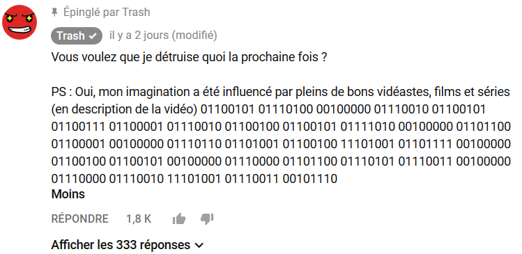

L'énigme pour les nouveaux:
[En cours d'écriture]
Le 22 mars 2018, Trash sort une nouvelle vidéo intitulé "Comment détruire internet. (Voir ci-dessous)
La vidéo est un court métrage mais jusque la rien de plus.
Ensuite, en regardant les commentaires nous découvrons le commentaire de Trash avec un code binaire signifiant "et regardez la vidéo de plus prés.".

En regardant de plus pres la vidéo, nous decouvrons une liste de flashcode (voir ci-dessous).
Grace a cette liste de code nous trouvons une autre vidéo cachée sur la chaine de Neo Trash s'intitulant "Un jour mon prince viendra" (voir ci-dessous).
C'est de la que commence l'énigme. Bon courage.
La première vidéo:
Liste des flashcodes de la premiere video:
0:20 - 1 U |
0:40 - 2 V |
0:50 - 3 C |
1:02 - 4 b |
1:30 - 5 r |
1:53 - 6 J |
2:30 - 7 G |
3:15 - 8 4 |
4:22 - 9 w |
Fin - 10 E
La seconde vidéo trouvée grace aux flashcode dans la premiere video:
Il dit dans cette vidéo deux phrases en japonais:
- Oyasumi -> Signifie "Bonne nuit"
- Chottomattekudasai (Ecrit en Kenji) -> Signifie "S'il vous plaît attendez un moment."